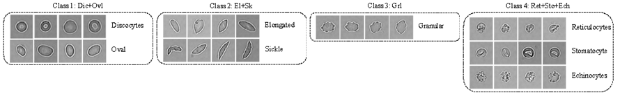
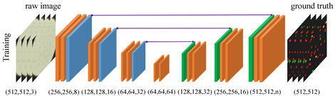
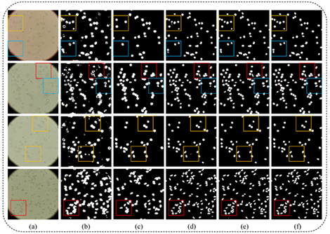
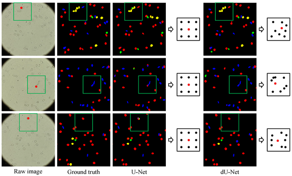
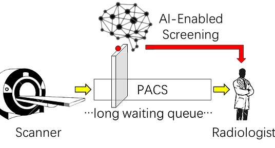
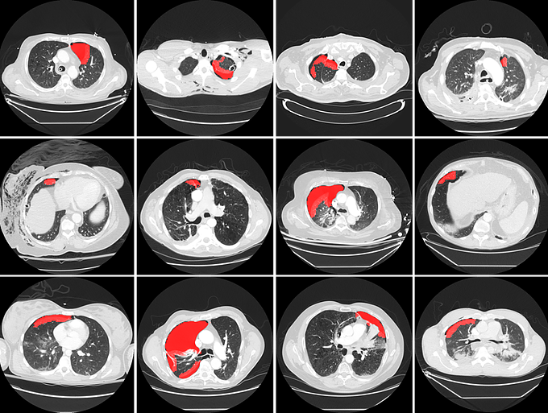
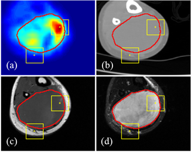
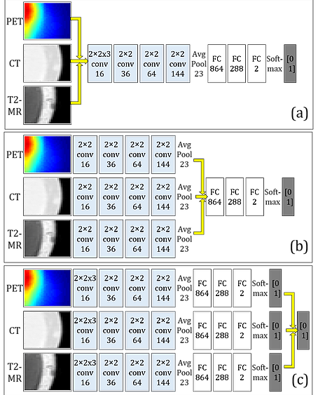
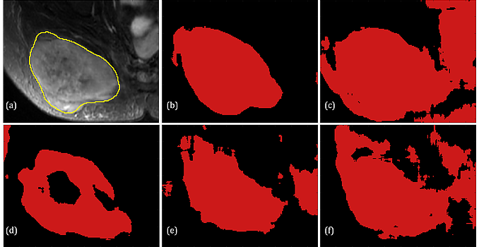
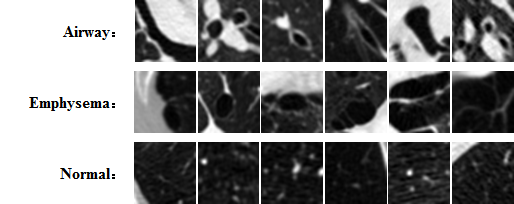

Red blood cell (RBC) segmentation and classification from biomedical images is a crucial step for the diagnosis of sickle cell disease (SCD).

Four types of RBCs. Cells of classes 2-4 have more variations in shape and texture, which usually marks a deficit in their functionalities.
Computer-aided programs that can perform automatic segmentation and classification of RBC images will greatly alleviate labor work of physicians and expedite diagnosis process. A collaborative work between MGH/BWH Center for Clinical Data Science and Center for Data Science at Peking University, we are developing and deploying a semantic segmentation framework to simultaneously detect and classify RBCs from raw microscopic images, called deformable U-Net (dU-net).

Architecture of the dU-Net developed in this project. Notice that deformable convolution layers are used to replace normal convolution in a classical U-Net.
Testing on preliminary data consisting of 314 images from 5 different SCD patients shows that dU-net framework achieves best segmentation/classification accuracy within an integrated workflow, outperforming both traditional unsupervised methods and classical U-Net structure. The extra deformable operation used in dU-Net makes the prediction model more robust towards variations in the size, shape and viewpoint of the cells (check the deformed sampling locations illustrated in figure below).


Binary segmentation results by different methods: (a) raw image, (b) Ilastik, (c) region growing, (d) U-Net, (e) dU-Net, (f) ground truth. .
Semantic segmentation results by U-Net and dU-Net. Different colors indicate different RBC types. Deformed sampling locations centered at the red points are shown to the right.
Related publication:
A summary of dU-Net and the preliminary results has been accepted by MICCAI 2018, which is also at arXiv.
Pneumothorax is a potentially life threatening condition characterized by the abnormal presence of free air in the thorax. Tension pneumothorax is widely considered an emergent critical finding, that requires special communication of the imaging results. For the detection of pneumothorax, timeliness can be challenging when chest CT examinations cannot be reviewed by the radiologists immediately. To address this chanllege, at MGH Radiology and MGH/BWH Center for Clinical Data Science we are building a deep learning-enabled system to autmatically detect the presence of pneumothorax on chest CT imagesupon completion of scanning. The system can alert the radiologists and other attending providers to reprioritize the CT work list for cases likely to harbor a pneumothorax.

Illustration of the need for a rapid screening system to re-prioritizing the work list for hospital management.
The pilot system has been tested in a pseudo-online manner with perfect sensitivity, illustrated in the figures below. The system will be further integrated into the clinical workflow at the point of completion of each chest CT scan, making it useful for patients with pre-existing chest diseases that place them at higher risk for pneumothorax, and for patients presenting in the emergency department for rapid triage.

Visualization of pneumothorax detection results (all positive) from nine patients, shown in axial view.
Media coverage:
Presentation of the system in ARRS 2018 is covered by auntminnie, the report can be found here.
This project is among the four finalist of the 2018 NVIDIA Global Impact Award, detailed information can be found here.
Multi-modal medical image analysis:
Multi-modality medical imaging techniques have been increasingly applied in clinical practice and research studies, where it has been well-recognized that multi-modal imaging can reveal rich information of the imaging target. In this study at MGH Radiology and MGH/BWH Center for Clinical Data Science, we are exploring how it can help advancing the accuracy and robustness for computer aided detection in a systemtic framework.

Multi-modal images on the same target location. (a): PET; (b): CT; (c): T1; (d): T2.
We first proposed an algorithmic architecture for supervised multi-modal medical analysis strategies: the feature learning level fusion, classifier level fusion, and decision-making level fusion. Then based on this algorithmic architecture, we built multi-modal Convolutional Neural Networks (CNN) that performs fusion across CT, MR and PET images at various stages.

Illustration of the structure for networks with different fusion level. The yellow arrows indicate the fusion location.
For the task of detecting and segmenting Soft Tissue Sarcoma, multi-modal deep learning system shows much superior performance than single-modal systems, even using images of lowered quality. The capability of maintaining high segmentation accuracy on low-dose images with added modality of the proposed system provides a new perspective in medical image acquisition and analysis.

(a) Ground truth shown as yellow contour line overlaid on the T2 image. (b) Result from fusion network based on PET+CT+T1. (c) Result from single-modality network based on T2. (d-f) Results from single-modality network based on PET, CT and T1, respectively.
Related publication:
Our paper on the study of multimodal fusion schemes has been accepted by ISBI 2018, which is also at arXiv.
Self-paced learning for convolutional neural network (spCNN):
The development of a robust and reliable deep learning model for computer-aided diagnosis (CAD) is highly challenging due to the combination of the high heterogeneity in the medical images and the relative lack of training samples. Annotation and labeling of the medical images is much more expensive and time-consuming than other applications (e.g. natrual images) and often involves manual labor from multiple domain experts. In this collaborative work between MGH/BWH Center for Clinical Data Science and Prof. Jieping Ye's group at Department of Computational Medicine and Bioinformatic at University of Michigan, we developed multi-stage, self-paced learning framework utilizing a convolutional neural network (CNN). The key contribution of this approach is that we augment the size of training samples by refining the unlabeled instances with a self-paced learning framework. Experimental result shows that the self-pace boosted network consistently makes good prediciton with very scarce manual labels. The performance gain indicates that applications with limited training samples such as medical image analysis can benefit from self-paced learning.

Comparison of the classification accuracies among the raw CNN (last row) and spCNN under different significant levels (I for p=0.1, II for p=0.05 and III for p=0.025) for FDR-controlled statistical testing.
Related publication:
A summary of the methodology and preliminary resutls from applying spCNN on chest Computed Tomography (CT) images has been accepted by MLMI 2018, which is also at arXiv.